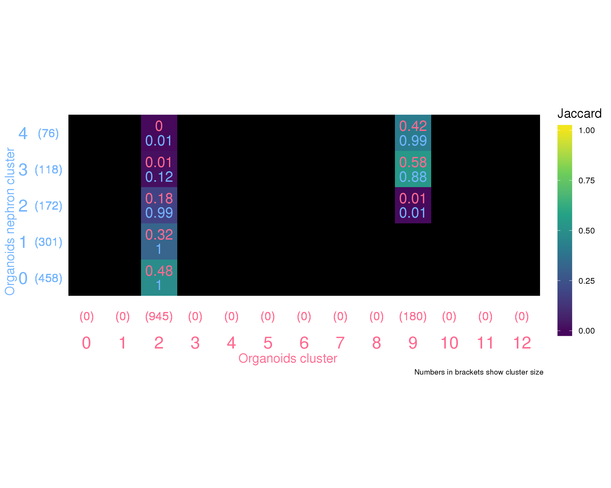
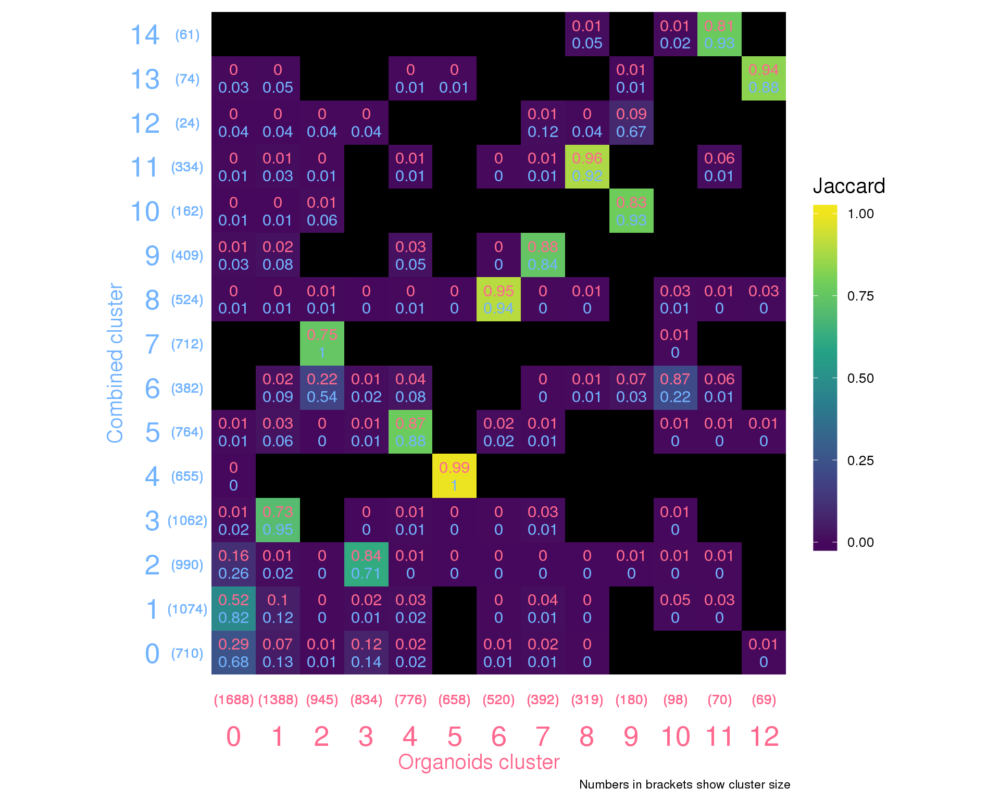
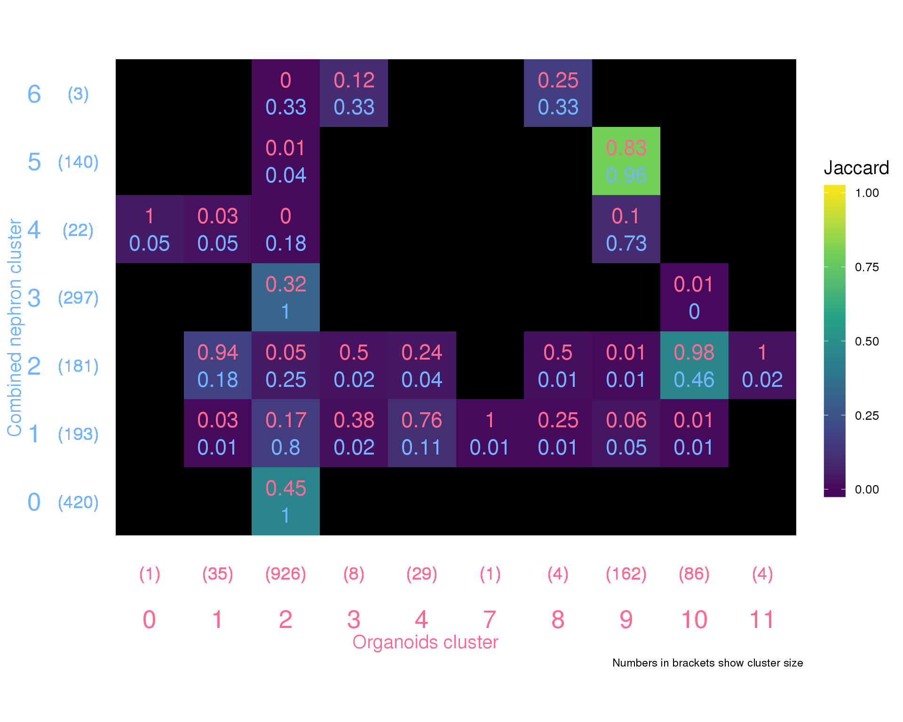
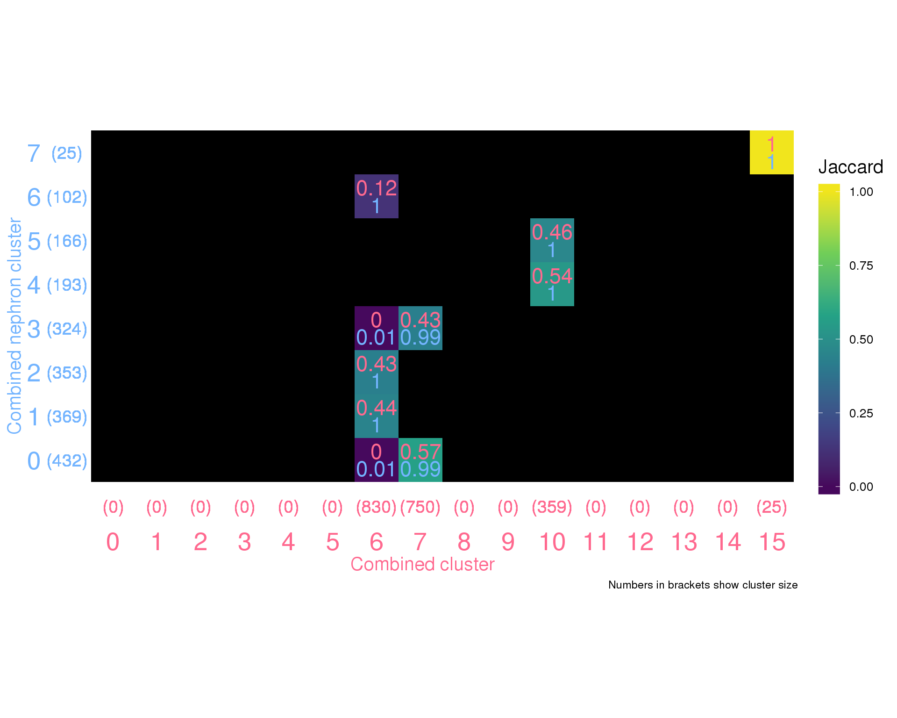
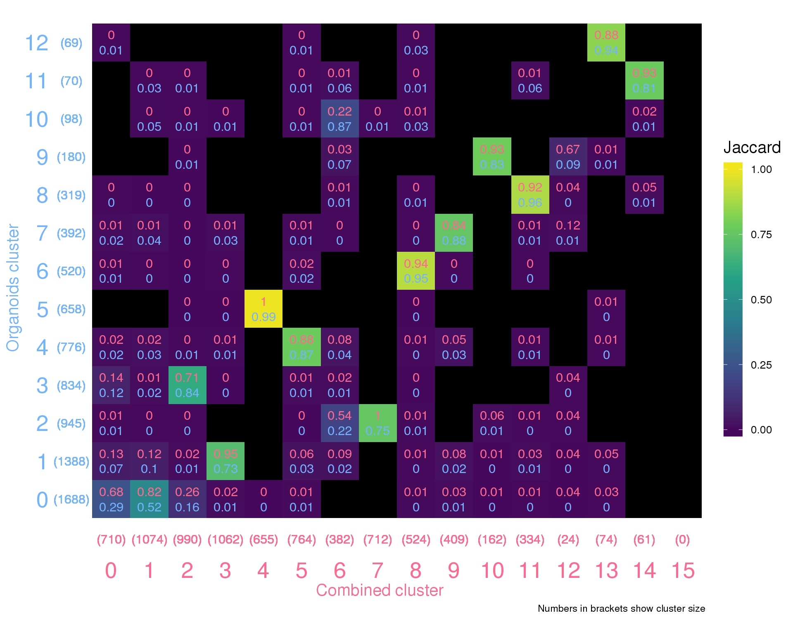
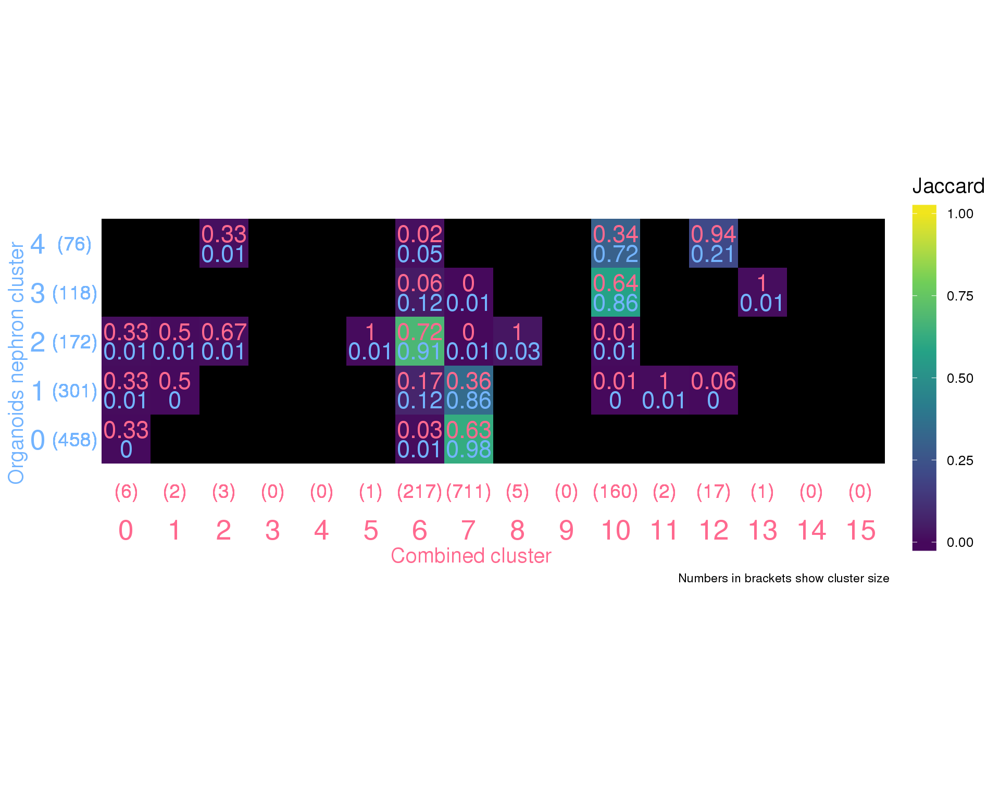
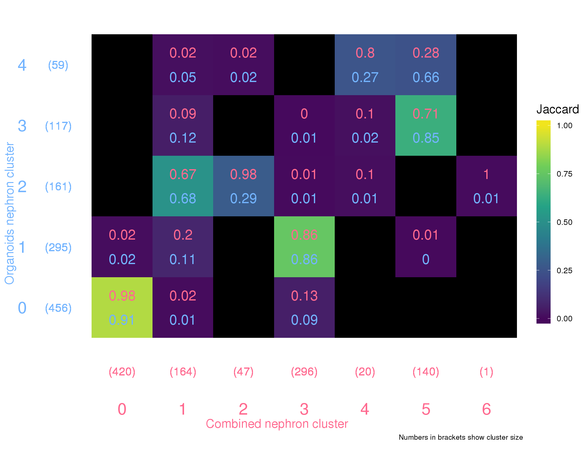

Last updated: 2018-09-13
workflowr checks: (Click a bullet for more information) ✔ R Markdown file: up-to-date
Great! Since the R Markdown file has been committed to the Git repository, you know the exact version of the code that produced these results.
✔ Environment: empty
Great job! The global environment was empty. Objects defined in the global environment can affect the analysis in your R Markdown file in unknown ways. For reproduciblity it’s best to always run the code in an empty environment.
✔ Seed:
set.seed(20180730)
The command set.seed(20180730) was run prior to running the code in the R Markdown file. Setting a seed ensures that any results that rely on randomness, e.g. subsampling or permutations, are reproducible.
✔ Session information: recorded
Great job! Recording the operating system, R version, and package versions is critical for reproducibility.
✔ Repository version: ad10b21
wflow_publish or wflow_git_commit). workflowr only checks the R Markdown file, but you know if there are other scripts or data files that it depends on. Below is the status of the Git repository when the results were generated:
Ignored files:
Ignored: .Rhistory
Ignored: .Rproj.user/
Ignored: analysis/cache/
Ignored: data/processed.bak/
Ignored: packrat/lib-R/
Ignored: packrat/lib-ext/
Ignored: packrat/lib/
Ignored: packrat/src/
Untracked files:
Untracked: analysis/cache.bak/
Unstaged changes:
Modified: analysis/99_Methods.Rmd
Staged changes:
Deleted: output/README.md
# Presentation
library("knitr")
library("glue")
# Paths
library("here")
# Tidyverse
library("tidyverse")source(here("R/output.R"))orgs.path <- here("output/04_Organoids_Clustering/cluster_assignments.csv")
orgs.neph.path <- here("output/04B_Organoids_Nephron/cluster_assignments.csv")
comb.path <- here("output/07_Combined_Clustering/cluster_assignments.csv")
comb.neph.path <- here("output/07B_Combined_Nephron/cluster_assignments.csv")In this document we are going to load the results of the various clustering analyses and compare them. The goal is to see if they are consistent by checking that clusters in different analyses that have been assigned the same cell types actually contain the same cells.
orgs.clusts <- read_csv(orgs.path,
col_types = cols(
Cell = col_character(),
Dataset = col_character(),
Sample = col_integer(),
Barcode = col_character(),
Cluster = col_integer()
)) %>%
rename(Organoids = Cluster)
orgs.neph.clusts <- read_csv(orgs.neph.path,
col_types = cols(
Cell = col_character(),
Dataset = col_character(),
Sample = col_integer(),
Barcode = col_character(),
Cluster = col_integer()
)) %>%
rename(OrgsNephron = Cluster)
comb.clusts <- read_csv(comb.path,
col_types = cols(
Cell = col_character(),
Dataset = col_character(),
Sample = col_integer(),
Barcode = col_character(),
Cluster = col_integer()
)) %>%
rename(Combined = Cluster)
comb.neph.clusts <- read_csv(comb.neph.path,
col_types = cols(
Cell = col_character(),
Dataset = col_character(),
Sample = col_integer(),
Barcode = col_character(),
Cluster = col_integer()
)) %>%
rename(CombNephron = Cluster)
clusts <- comb.clusts %>%
left_join(comb.neph.clusts,
by = c("Cell", "Dataset", "Sample", "Barcode")) %>%
left_join(orgs.clusts,
by = c("Cell", "Dataset", "Sample", "Barcode")) %>%
left_join(orgs.neph.clusts,
by = c("Cell", "Dataset", "Sample", "Barcode"))We are going to do this using a kind of heatmap. Clustering results from two separate analyses will form the x and y axes and each cell will represent the overlap in samples between two clusters. We will colour the cells using the Jaccard index, a measure of similarity between to groups that is equal to the size of the intersect divided by the size of the union. This will highlight clusters that are particularly similar. We will also label cells with the proportion of samples in a cluster that are also in another, so that rows and columns will each sum to one (using a separate colour for each).
summariseClusts <- function(clusts, clust1, clust2) {
clust1 <- enquo(clust1)
clust2 <- enquo(clust2)
clusts %>%
filter(!is.na(!!clust1) & !is.na(!!clust2)) %>%
group_by(!!clust1, !!clust2) %>%
summarise(Count = n()) %>%
ungroup() %>%
complete(!!clust1, !!clust2) %>%
mutate(!!quo_name(clust1) := factor(!!clust1),
!!quo_name(clust2) := factor(!!clust2)) %>%
group_by(!!clust1) %>%
mutate(!!paste0(quo_name(clust1), "Total") := sum(Count, na.rm = TRUE),
!!paste0(quo_name(clust1), "Pct") :=
Count / sum(Count, na.rm = TRUE)) %>%
group_by(!!clust2) %>%
mutate(!!paste0(quo_name(clust2), "Total") := sum(Count, na.rm = TRUE),
!!paste0(quo_name(clust2), "Pct") :=
Count / sum(Count, na.rm = TRUE)) %>%
mutate(Jaccard = Count /
(!!rlang::sym(paste0(quo_name(clust1), "Total")) +
!!rlang::sym(paste0(quo_name(clust2), "Total")) -
Count))
}summariseClusts(clusts, Organoids, OrgsNephron) %>%
ggplot(aes(x = Organoids, y = OrgsNephron, fill = Jaccard)) +
geom_tile() +
geom_text(aes(label = round(OrganoidsPct, 2)), nudge_y = 0.2,
colour = "#ff698f", size = 6) +
geom_text(aes(label = round(OrgsNephronPct, 2)), nudge_y = -0.2,
colour = "#73b4ff", size = 6) +
geom_text(aes(label = glue("({OrganoidsTotal})")), y = -0.05,
size = 5, colour = "#ff698f") +
geom_text(aes(label = glue("({OrgsNephronTotal})")), x = -0.05,
size = 5, colour = "#73b4ff") +
scale_fill_viridis_c(begin = 0.02, end = 0.98, na.value = "black",
limits = c(0, 1)) +
coord_equal() +
expand_limits(x = -0.5, y = -0.5) +
labs(x = "Organoids cluster",
y = "Organoids nephron cluster",
caption = "Numbers in brackets show cluster size") +
theme_minimal() +
theme(axis.text = element_text(size = 20),
axis.text.x = element_text(colour = "#ff698f"),
axis.text.y = element_text(colour = "#73b4ff"),
axis.ticks = element_blank(),
axis.title = element_text(size = 15),
axis.title.x = element_text(colour = "#ff698f"),
axis.title.y = element_text(colour = "#73b4ff"),
legend.key.height = unit(50, "pt"),
legend.title = element_text(size = 15),
legend.text = element_text(size = 10),
panel.grid = element_blank())
| Version | Author | Date |
|---|---|---|
| ad10b21 | Luke Zappia | 2018-09-13 |
summariseClusts(clusts, Organoids, Combined) %>%
ggplot(aes(x = Organoids, y = Combined, fill = Jaccard)) +
geom_tile() +
geom_text(aes(label = round(OrganoidsPct, 2)), nudge_y = 0.2,
colour = "#ff698f", size = 4) +
geom_text(aes(label = round(CombinedPct, 2)), nudge_y = -0.2,
colour = "#73b4ff", size = 4) +
geom_text(aes(label = glue("({OrganoidsTotal})")), y = -0.05,
size = 3.5, colour = "#ff698f") +
geom_text(aes(label = glue("({CombinedTotal})")), x = -0.05,
size = 3.5, colour = "#73b4ff") +
scale_fill_viridis_c(begin = 0.02, end = 0.98, na.value = "black",
limits = c(0, 1)) +
coord_equal() +
expand_limits(x = -0.5, y = -0.5) +
labs(x = "Organoids cluster",
y = "Combined cluster",
caption = "Numbers in brackets show cluster size") +
theme_minimal() +
theme(axis.text = element_text(size = 20),
axis.text.x = element_text(colour = "#ff698f"),
axis.text.y = element_text(colour = "#73b4ff"),
axis.ticks = element_blank(),
axis.title = element_text(size = 15),
axis.title.x = element_text(colour = "#ff698f"),
axis.title.y = element_text(colour = "#73b4ff"),
legend.key.height = unit(50, "pt"),
legend.title = element_text(size = 15),
legend.text = element_text(size = 10),
panel.grid = element_blank())
| Version | Author | Date |
|---|---|---|
| ad10b21 | Luke Zappia | 2018-09-13 |
summariseClusts(clusts, Organoids, CombNephron) %>%
ggplot(aes(x = Organoids, y = CombNephron, fill = Jaccard)) +
geom_tile() +
geom_text(aes(label = round(OrganoidsPct, 2)), nudge_y = 0.2,
colour = "#ff698f", size = 6) +
geom_text(aes(label = round(CombNephronPct, 2)), nudge_y = -0.2,
colour = "#73b4ff", size = 6) +
geom_text(aes(label = glue("({OrganoidsTotal})")), y = -0.05,
size = 5, colour = "#ff698f") +
geom_text(aes(label = glue("({CombNephronTotal})")), x = -0.05,
size = 5, colour = "#73b4ff") +
scale_fill_viridis_c(begin = 0.02, end = 0.98, na.value = "black",
limits = c(0, 1)) +
coord_equal() +
expand_limits(x = -0.5, y = -0.5) +
labs(x = "Organoids cluster",
y = "Combined nephron cluster",
caption = "Numbers in brackets show cluster size") +
theme_minimal() +
theme(axis.text = element_text(size = 20),
axis.text.x = element_text(colour = "#ff698f"),
axis.text.y = element_text(colour = "#73b4ff"),
axis.ticks = element_blank(),
axis.title = element_text(size = 15),
axis.title.x = element_text(colour = "#ff698f"),
axis.title.y = element_text(colour = "#73b4ff"),
legend.key.height = unit(50, "pt"),
legend.title = element_text(size = 15),
legend.text = element_text(size = 10),
panel.grid = element_blank())
| Version | Author | Date |
|---|---|---|
| ad10b21 | Luke Zappia | 2018-09-13 |
summariseClusts(clusts, Combined, CombNephron) %>%
ggplot(aes(x = Combined, y = CombNephron, fill = Jaccard)) +
geom_tile() +
geom_text(aes(label = round(CombinedPct, 2)), nudge_y = 0.2,
colour = "#ff698f", size = 6) +
geom_text(aes(label = round(CombNephronPct, 2)), nudge_y = -0.2,
colour = "#73b4ff", size = 6) +
geom_text(aes(label = glue("({CombinedTotal})")), y = -0.05,
size = 5, colour = "#ff698f") +
geom_text(aes(label = glue("({CombNephronTotal})")), x = -0.05,
size = 5, colour = "#73b4ff") +
scale_fill_viridis_c(begin = 0.02, end = 0.98, na.value = "black",
limits = c(0, 1)) +
coord_equal() +
expand_limits(x = -0.5, y = -0.5) +
labs(x = "Combined cluster",
y = "Combined nephron cluster",
caption = "Numbers in brackets show cluster size") +
theme_minimal() +
theme(axis.text = element_text(size = 20),
axis.text.x = element_text(colour = "#ff698f"),
axis.text.y = element_text(colour = "#73b4ff"),
axis.ticks = element_blank(),
axis.title = element_text(size = 15),
axis.title.x = element_text(colour = "#ff698f"),
axis.title.y = element_text(colour = "#73b4ff"),
legend.key.height = unit(50, "pt"),
legend.title = element_text(size = 15),
legend.text = element_text(size = 10),
panel.grid = element_blank())
| Version | Author | Date |
|---|---|---|
| ad10b21 | Luke Zappia | 2018-09-13 |
summariseClusts(clusts, Combined, Organoids) %>%
ggplot(aes(x = Combined, y = Organoids, fill = Jaccard)) +
geom_tile() +
geom_text(aes(label = round(CombinedPct, 2)), nudge_y = 0.2,
colour = "#ff698f", size = 4) +
geom_text(aes(label = round(OrganoidsPct, 2)), nudge_y = -0.2,
colour = "#73b4ff", size = 4) +
geom_text(aes(label = glue("({CombinedTotal})")), y = -0.05,
size = 4, colour = "#ff698f") +
geom_text(aes(label = glue("({OrganoidsTotal})")), x = -0.05,
size = 4, colour = "#73b4ff") +
scale_fill_viridis_c(begin = 0.02, end = 0.98, na.value = "black",
limits = c(0, 1)) +
coord_equal() +
expand_limits(x = -0.5, y = -0.5) +
labs(x = "Combined cluster",
y = "Organoids cluster",
caption = "Numbers in brackets show cluster size") +
theme_minimal() +
theme(axis.text = element_text(size = 20),
axis.text.x = element_text(colour = "#ff698f"),
axis.text.y = element_text(colour = "#73b4ff"),
axis.ticks = element_blank(),
axis.title = element_text(size = 15),
axis.title.x = element_text(colour = "#ff698f"),
axis.title.y = element_text(colour = "#73b4ff"),
legend.key.height = unit(50, "pt"),
legend.title = element_text(size = 15),
legend.text = element_text(size = 10),
panel.grid = element_blank())
| Version | Author | Date |
|---|---|---|
| ad10b21 | Luke Zappia | 2018-09-13 |
summariseClusts(clusts, Combined, OrgsNephron) %>%
ggplot(aes(x = Combined, y = OrgsNephron, fill = Jaccard)) +
geom_tile() +
geom_text(aes(label = round(CombinedPct, 2)), nudge_y = 0.2,
colour = "#ff698f", size = 6) +
geom_text(aes(label = round(OrgsNephronPct, 2)), nudge_y = -0.2,
colour = "#73b4ff", size = 6) +
geom_text(aes(label = glue("({CombinedTotal})")), y = -0.05,
size = 5, colour = "#ff698f") +
geom_text(aes(label = glue("({OrgsNephronTotal})")), x = -0.05,
size = 5, colour = "#73b4ff") +
scale_fill_viridis_c(begin = 0.02, end = 0.98, na.value = "black",
limits = c(0, 1)) +
coord_equal() +
expand_limits(x = -0.5, y = -0.5) +
labs(x = "Combined cluster",
y = "Organoids nephron cluster",
caption = "Numbers in brackets show cluster size") +
theme_minimal() +
theme(axis.text = element_text(size = 20),
axis.text.x = element_text(colour = "#ff698f"),
axis.text.y = element_text(colour = "#73b4ff"),
axis.ticks = element_blank(),
axis.title = element_text(size = 15),
axis.title.x = element_text(colour = "#ff698f"),
axis.title.y = element_text(colour = "#73b4ff"),
legend.key.height = unit(50, "pt"),
legend.title = element_text(size = 15),
legend.text = element_text(size = 10),
panel.grid = element_blank())
| Version | Author | Date |
|---|---|---|
| ad10b21 | Luke Zappia | 2018-09-13 |
summariseClusts(clusts, CombNephron, OrgsNephron) %>%
ggplot(aes(x = CombNephron, y = OrgsNephron, fill = Jaccard)) +
geom_tile() +
geom_text(aes(label = round(CombNephronPct, 2)), nudge_y = 0.2,
colour = "#ff698f", size = 6) +
geom_text(aes(label = round(OrgsNephronPct, 2)), nudge_y = -0.2,
colour = "#73b4ff", size = 6) +
geom_text(aes(label = glue("({CombNephronTotal})")), y = -0.05,
size = 5, colour = "#ff698f") +
geom_text(aes(label = glue("({OrgsNephronTotal})")), x = -0.05,
size = 5, colour = "#73b4ff") +
scale_fill_viridis_c(begin = 0.02, end = 0.98, na.value = "black",
limits = c(0, 1)) +
coord_equal() +
expand_limits(x = -0.5, y = -0.5) +
labs(x = "Combined nephron cluster",
y = "Organoids nephron cluster",
caption = "Numbers in brackets show cluster size") +
theme_minimal() +
theme(axis.text = element_text(size = 20),
axis.text.x = element_text(colour = "#ff698f"),
axis.text.y = element_text(colour = "#73b4ff"),
axis.ticks = element_blank(),
axis.title = element_text(size = 15),
axis.title.x = element_text(colour = "#ff698f"),
axis.title.y = element_text(colour = "#73b4ff"),
legend.key.height = unit(50, "pt"),
legend.title = element_text(size = 15),
legend.text = element_text(size = 10),
panel.grid = element_blank())
| Version | Author | Date |
|---|---|---|
| ad10b21 | Luke Zappia | 2018-09-13 |
This table describes the output files produced by this document. Right click and Save Link As… to download the results.
dir.create(here("output", DOCNAME), showWarnings = FALSE)
write_csv(clusts, here("output", DOCNAME, "cluster_assignments.csv"))
kable(data.frame(
File = c(
glue("[cluster_assignments.csv]",
"({getDownloadURL('cluster_assignments.csv', DOCNAME)})")
),
Description = c(
"Cluster assignments for all clustering analyses"
)
))| File | Description |
|---|---|
| cluster_assignments.csv | Cluster assignments for all clustering analyses |
| cluster_assignments.csv | Cluster assignments for all clustering analyses |
devtools::session_info() setting value
version R version 3.5.0 (2018-04-23)
system x86_64, linux-gnu
ui X11
language (EN)
collate en_US.UTF-8
tz Australia/Melbourne
date 2018-09-13
package * version date source
assertthat 0.2.0 2017-04-11 CRAN (R 3.5.0)
backports 1.1.2 2017-12-13 CRAN (R 3.5.0)
base * 3.5.0 2018-06-18 local
bindr 0.1.1 2018-03-13 cran (@0.1.1)
bindrcpp * 0.2.2 2018-03-29 cran (@0.2.2)
broom 0.5.0 2018-07-17 cran (@0.5.0)
cellranger 1.1.0 2016-07-27 CRAN (R 3.5.0)
cli 1.0.0 2017-11-05 CRAN (R 3.5.0)
colorspace 1.3-2 2016-12-14 cran (@1.3-2)
compiler 3.5.0 2018-06-18 local
crayon 1.3.4 2017-09-16 CRAN (R 3.5.0)
datasets * 3.5.0 2018-06-18 local
devtools 1.13.6 2018-06-27 CRAN (R 3.5.0)
digest 0.6.15 2018-01-28 CRAN (R 3.5.0)
dplyr * 0.7.6 2018-06-29 cran (@0.7.6)
evaluate 0.10.1 2017-06-24 CRAN (R 3.5.0)
forcats * 0.3.0 2018-02-19 CRAN (R 3.5.0)
ggplot2 * 3.0.0 2018-07-03 cran (@3.0.0)
git2r 0.21.0 2018-01-04 CRAN (R 3.5.0)
glue * 1.3.0 2018-07-17 cran (@1.3.0)
graphics * 3.5.0 2018-06-18 local
grDevices * 3.5.0 2018-06-18 local
grid 3.5.0 2018-06-18 local
gtable 0.2.0 2016-02-26 cran (@0.2.0)
haven 1.1.2 2018-06-27 CRAN (R 3.5.0)
here * 0.1 2017-05-28 CRAN (R 3.5.0)
highr 0.7 2018-06-09 CRAN (R 3.5.0)
hms 0.4.2 2018-03-10 CRAN (R 3.5.0)
htmltools 0.3.6 2017-04-28 CRAN (R 3.5.0)
httr 1.3.1 2017-08-20 CRAN (R 3.5.0)
jsonlite 1.5 2017-06-01 CRAN (R 3.5.0)
knitr * 1.20 2018-02-20 CRAN (R 3.5.0)
labeling 0.3 2014-08-23 cran (@0.3)
lattice 0.20-35 2017-03-25 CRAN (R 3.5.0)
lazyeval 0.2.1 2017-10-29 cran (@0.2.1)
lubridate 1.7.4 2018-04-11 cran (@1.7.4)
magrittr 1.5 2014-11-22 CRAN (R 3.5.0)
memoise 1.1.0 2017-04-21 CRAN (R 3.5.0)
methods * 3.5.0 2018-06-18 local
modelr 0.1.2 2018-05-11 CRAN (R 3.5.0)
munsell 0.5.0 2018-06-12 cran (@0.5.0)
nlme 3.1-137 2018-04-07 CRAN (R 3.5.0)
pillar 1.3.0 2018-07-14 cran (@1.3.0)
pkgconfig 2.0.1 2017-03-21 cran (@2.0.1)
plyr 1.8.4 2016-06-08 cran (@1.8.4)
purrr * 0.2.5 2018-05-29 cran (@0.2.5)
R.methodsS3 1.7.1 2016-02-16 CRAN (R 3.5.0)
R.oo 1.22.0 2018-04-22 CRAN (R 3.5.0)
R.utils 2.6.0 2017-11-05 CRAN (R 3.5.0)
R6 2.2.2 2017-06-17 CRAN (R 3.5.0)
Rcpp 0.12.18 2018-07-23 cran (@0.12.18)
readr * 1.1.1 2017-05-16 CRAN (R 3.5.0)
readxl 1.1.0 2018-04-20 CRAN (R 3.5.0)
rlang 0.2.1 2018-05-30 CRAN (R 3.5.0)
rmarkdown 1.10.2 2018-07-30 Github (rstudio/rmarkdown@18207b9)
rprojroot 1.3-2 2018-01-03 CRAN (R 3.5.0)
rstudioapi 0.7 2017-09-07 CRAN (R 3.5.0)
rvest 0.3.2 2016-06-17 CRAN (R 3.5.0)
scales 0.5.0 2017-08-24 cran (@0.5.0)
stats * 3.5.0 2018-06-18 local
stringi 1.2.4 2018-07-20 cran (@1.2.4)
stringr * 1.3.1 2018-05-10 CRAN (R 3.5.0)
tibble * 1.4.2 2018-01-22 cran (@1.4.2)
tidyr * 0.8.1 2018-05-18 cran (@0.8.1)
tidyselect 0.2.4 2018-02-26 cran (@0.2.4)
tidyverse * 1.2.1 2017-11-14 CRAN (R 3.5.0)
tools 3.5.0 2018-06-18 local
utils * 3.5.0 2018-06-18 local
viridisLite 0.3.0 2018-02-01 cran (@0.3.0)
whisker 0.3-2 2013-04-28 CRAN (R 3.5.0)
withr 2.1.2 2018-03-15 CRAN (R 3.5.0)
workflowr 1.1.1 2018-07-06 CRAN (R 3.5.0)
xml2 1.2.0 2018-01-24 CRAN (R 3.5.0)
yaml 2.2.0 2018-07-25 cran (@2.2.0) This reproducible R Markdown analysis was created with workflowr 1.1.1